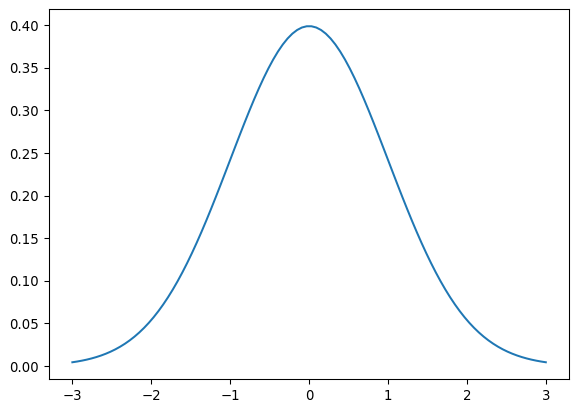

from scipy.special import comb
def binomial(s, n, p):
return comb(n, s)*p**s*(1-p)**(n - s)Distribuciones de Probabilidad
Distribución binomial
Consideremos un experimento que puede dar un resultado positivo con probabilidad \(p\) o negativo con probabilidad \(1 - p\). Preguntamos cuál es la probabilidad de obtener \(s\) resultados positivos cuando se realiza el experimento \(n\) veces de manera independiente.
A manera de ejemplo preguntemos primero cuál es la probabilidad de obtener \(3\) positivos cuando se realiza el experimento \(4\) veces. Estos tres resultados positivos pueden aparecer de las siguientes maneras \[ \text{+++-},\,\text{++-+},\,\text{+-++},\,\text{-+++}\,. \] La probabilidad de obtener el primer resultado es \[ p\times p\times p\times (1-p) = p^3 (1-p)\,. \] La probabilidad de las otras tres posibilidades es igual y entonces \[ P(3;4,p) = 4 p^3(1-p)\,. \]
La fórmula general es
\[ P(s;n,p) = \frac{n!}{s!(n-s)!} p^s (1-p)^{n - s} \]
import matplotlib.pyplot as pltdef probs(n, p):
return [binomial(s, n, p) for s in range(n+1)]fig = plt.figure(figsize=(8,20), dpi= 100)
ax1 = fig.add_subplot(8,2,1)
ax2 = fig.add_subplot(8,2,2)
ax3 = fig.add_subplot(8,2,3)
ax4 = fig.add_subplot(8,2,4)
ax5 = fig.add_subplot(8,2,5)
ax6 = fig.add_subplot(8,2,6)
ax7 = fig.add_subplot(8,2,7)
ax8 = fig.add_subplot(8,2,8)
ax1.bar(range(4+1), probs(4,0.5))
ax2.bar(range(5+1), probs(5,0.5))
ax3.bar(range(15+1), probs(15,0.5))
ax4.bar(range(50+1), probs(50,0.5))
ax5.bar(range(5+1), probs(5,0.1))
ax6.bar(range(15+1), probs(15,0.1))
ax7.bar(range(5+1), probs(5,0.9))
ax8.bar(range(15+1), probs(15,0.9))
ax1.set_title('s = 4, p = 0.5')
ax2.set_title('s = 5, p = 0.5')
ax3.set_title('s = 15, p = 0.5')
ax4.set_title('s = 50, p = 0.5')
ax5.set_title('s = 5, p = 0.1')
ax6.set_title('s = 15, p = 0.1')
ax7.set_title('s = 5, p = 0.9')
ax8.set_title('s = 15, p = 0.9')
fig.tight_layout(pad=2.0)
fig.show()- Valor esperado: \(\langle n \rangle = rp\)
- Varianza: \(\sigma^2 = np(1-p)\)
import random
import numpy as np
def realizacion(r, p):
probs = np.random.rand(r)
return probs < p
def num_exitos(num_realizaciones, r, p):
# probando me dí cuenta que al sumar me regresa el número
# de elementos que son True
return np.array([sum(realizacion(r, p)) for i in range(num_realizaciones)])num_exitos(3, 10, 0.2).mean()np.float64(1.6666666666666667)num_exitos(10000, 10, 0.2).mean()np.float64(1.9851)num_exitos(10000, 10, 0.2).std()np.float64(1.2755754426924344)np.sqrt(10*0.2*0.8)np.float64(1.2649110640673518)Distribución de Poisson
Es la probabilidad de obtener \(n\) eventos de un proceso que en promedio ocurre \(\lambda\) veces en un intervalo.
Si dividimos el continuo en \(r\) subintervalos, y la probabilidad de que el evento ocurra en un subintervalo dado es \(\lambda/r\), entonces podemos usar la distribución binomial
\[ P(s; n, \lambda/n) = \frac{\lambda^s}{n^s}\left(1 - \frac{\lambda}{r}\right)^{n - s}\frac{n!}{s!(n-s)!} \]
Si hay infinitos subintervalos \(n\rightarrow \infty\) tenemos que
\[ \frac{n!}{(n-s)!} = n(n-1)(n-2)...(n-s + 1) \rightarrow n^s\,, \] \[ \left(1 - \frac{\lambda}{r}\right)^{n - s} \rightarrow \left(1 - \frac{\lambda}{r}\right)^{n} \rightarrow e^{-\lambda} \]
(La última se puede demostrar expandiendo ambos lados en Taylor). Así obtenemos la distribución de Poisson:
\[ P(s; \lambda) = \frac{\lambda^s}{s!} e^{-\lambda} \]
from scipy.special import factorial
def poisson(n, lamda):
return lamda**n*np.exp(-lamda)/factorial(n)Ejemplo: Si en promedio caen dos rayos por minuto en una tormenta eléctrica. ¿Cuál es la probabilidad de obtener 5 rayos en un minuto?
poisson(5,2)np.float64(0.03608940886309672)Ejemplo: Número de neutrinos detectados en intervalos de 10 segundos por un experimento el 27 de febrero de 1987. Alrededor de esa fecha se observó laa explosión de la supernova SN1987a.
datos = np.array([[0,1042],
[1,860],
[2,307],
[3,78],
[4,15],
[5,3],
[6,0],
[70,0],
[8,0],
[9,1]])El punto con 9 eventos es anómalo. Excluyámoslo por ahora y calculemos el número promedio de eventos en un intervalo de 10 segundos
lamda = sum(datos[:-1,0]*datos[:-1,1])/sum(datos[:-1,1])predicciones = np.array([poisson(n, lamda)*sum(datos[:-1,1]) for n in range(10)])prediccionesarray([1.06347823e+03, 8.22638474e+02, 3.18170152e+02, 8.20386667e+01,
1.58649613e+01, 2.45442307e+00, 3.16430683e-01, 3.49672084e-02,
3.38104840e-03, 2.90595772e-04])La mayoría de intervalos siguen una distribución de Poisson que se atribuye a un ruido de fondo. El intervalo con 9 eventos no sigue esa distribución y se puede decir que se detectó la emisión de neutrinos por parte de la supernova. Veremos un criterio para esto más adelante.
def probs(lamda, m):
return [poisson(n, lamda) for n in range(m+1)]
fig = plt.figure(figsize=(8,12), dpi= 100)
ax1 = fig.add_subplot(4,2,1)
ax2 = fig.add_subplot(4,2,2)
ax3 = fig.add_subplot(4,2,3)
ax4 = fig.add_subplot(4,2,4)
ax5 = fig.add_subplot(4,2,5)
ax6 = fig.add_subplot(4,2,6)
ax7 = fig.add_subplot(4,2,7)
ax8 = fig.add_subplot(4,2,8)
ax1.bar(range(5+1), probs(0.2, 5))
ax2.bar(range(5+1), probs(0.5, 5))
ax3.bar(range(10+1), probs(1, 10))
ax4.bar(range(10+1), probs(2, 10))
ax5.bar(range(15+1), probs(5, 15))
ax6.bar(range(25+1), probs(10, 25))
ax7.bar(range(40+1), probs(20, 40))
ax8.bar(range(80+1), probs(50, 80))
ax1.set_title('$\lambda = 0.2$')
ax2.set_title('$\lambda = 0.5$')
ax3.set_title('$\lambda = 1$')
ax4.set_title('$\lambda = 2$')
ax5.set_title('$\lambda = 5$')
ax6.set_title('$\lambda = 10$')
ax7.set_title('$\lambda = 20$')
ax8.set_title('$\lambda = 50$')
fig.tight_layout(pad=2.0)
fig.show()<>:24: SyntaxWarning: invalid escape sequence '\l'
<>:25: SyntaxWarning: invalid escape sequence '\l'
<>:26: SyntaxWarning: invalid escape sequence '\l'
<>:27: SyntaxWarning: invalid escape sequence '\l'
<>:28: SyntaxWarning: invalid escape sequence '\l'
<>:29: SyntaxWarning: invalid escape sequence '\l'
<>:30: SyntaxWarning: invalid escape sequence '\l'
<>:31: SyntaxWarning: invalid escape sequence '\l'
<>:24: SyntaxWarning: invalid escape sequence '\l'
<>:25: SyntaxWarning: invalid escape sequence '\l'
<>:26: SyntaxWarning: invalid escape sequence '\l'
<>:27: SyntaxWarning: invalid escape sequence '\l'
<>:28: SyntaxWarning: invalid escape sequence '\l'
<>:29: SyntaxWarning: invalid escape sequence '\l'
<>:30: SyntaxWarning: invalid escape sequence '\l'
<>:31: SyntaxWarning: invalid escape sequence '\l'
/tmp/ipykernel_731443/2634404984.py:24: SyntaxWarning: invalid escape sequence '\l'
ax1.set_title('$\lambda = 0.2$')
/tmp/ipykernel_731443/2634404984.py:25: SyntaxWarning: invalid escape sequence '\l'
ax2.set_title('$\lambda = 0.5$')
/tmp/ipykernel_731443/2634404984.py:26: SyntaxWarning: invalid escape sequence '\l'
ax3.set_title('$\lambda = 1$')
/tmp/ipykernel_731443/2634404984.py:27: SyntaxWarning: invalid escape sequence '\l'
ax4.set_title('$\lambda = 2$')
/tmp/ipykernel_731443/2634404984.py:28: SyntaxWarning: invalid escape sequence '\l'
ax5.set_title('$\lambda = 5$')
/tmp/ipykernel_731443/2634404984.py:29: SyntaxWarning: invalid escape sequence '\l'
ax6.set_title('$\lambda = 10$')
/tmp/ipykernel_731443/2634404984.py:30: SyntaxWarning: invalid escape sequence '\l'
ax7.set_title('$\lambda = 20$')
/tmp/ipykernel_731443/2634404984.py:31: SyntaxWarning: invalid escape sequence '\l'
ax8.set_title('$\lambda = 50$')probs(0.2, 5)[np.float64(0.8187307530779818),
np.float64(0.1637461506155964),
np.float64(0.016374615061559638),
np.float64(0.001091641004103976),
np.float64(5.45820502051988e-05),
np.float64(2.183282008207952e-06)]- Valor esperado: \(\langle n \rangle = \lambda\)
- Varianza: \(\sigma^2 = \lambda\)
La distribución gaussiana
La PDF más útil es la gaussiana, pronto veremos por qué
\[ \rho(x) = \frac{1}{\sqrt{2\pi}\sigma} e^{-\frac{(x - \mu)^2}{2\sigma^2}} \]
import matplotlib.pyplot as plt
import numpy as npdef gauss(x, mu, sigma):
return np.exp(-(x - mu)**2/(2*sigma**2))/(np.sqrt(2*np.pi)*sigma)x = np.linspace(-3, 3, 100)
plt.plot(x, gauss(x, 0, 1))
plt.show()
La gaussiana cumple las siguientes propiedades
\(\langle x \rangle = \mu\)
\(\langle (x - \mu)^2\rangle = \sigma^2\)
\(\int_{-\sigma}^\sigma dx\, \rho(x) = 0.682689\)
\(\int_{-2\sigma}^{2\sigma} dx\, \rho(x) = 0.9545\)
\(\int_{-3\sigma}^{3\sigma} dx\, \rho(x) = 0.9973\)
\(\int_{-5\sigma}^{5\sigma} dx\, \rho(x) = 0.999999\)
¡Tareas!
Tarea 3.6
Un cierto sensor se deja abierto por un segundo. El sensor consiste en \(r\) pixeles y en promedio el sensor es golpeado por \(2\) partículas por segundo, tal que la probabilidad de detectar una partícula en un pixel dado es de \(2/r\) (para \(r \gg 2\)). Grafique la distribución de probabilidad de observar \(n\) partículas para un pixel dado, en función de \(n\), para diferentes valores de \(r\):
Usando la distribución binomial.
¿Cuándo es posible usar la distribución de Poisson?
Tarea 3.7
En ausencia de una señal, un cierto detector de partículas en promedio detecta \(2\) impactos por segundo debidos a una contaminación de fondo. Durante una medición se obtienen las siguientes observaciones (esta es una lista del número de señales por cada segundo de duración del experimento):
mediciones = [2, 3, 3, 3, 0, 1, 2, 2, 0, 4, 10, 0, 2, 4, 6, 3, 2, 1, 1, 1]Compare estos resultados con la distribución de Poisson. Discuta en cuáles intervalos cree usted que se detectó una señal que no es contaminación.
Tarea 3.8
Un sensor recibe en promedio \(50\) partículas por minuto. Ese sensor está diseñado tal que puede detectar si fue impactado por al menos una partícula, pero no tiene ninguna información sobre cuántas partículas lo impactaron.
El sensor se encendió durante un segundo e indicó impacto. Grafique la distribución de probabilidad de que ese pixel haya sido impactado por \(n\) partículas.
Tarea 3.9
Considere los siguientes conjuntos de mediciones de una cierta cantidad que tiene un valor verdadero de \(10\) y la medición tiene un error gaussiano de \(\pm 0.1\) a un nivel de confiaza del \(68\%\). ¿Cuál de ellos es anómalo? ¿Por qué? ¿Qué interpretación le da?
# Conjunto 1
c1 = [10.09728388, 14.00677546, 9.97330124, 10.03403577, 10.11014852,
9.85702412, 10.06725561, 10.08586217, 9.99805356, 10.09222044,
9.96873542, 10.0603082 , 9.78777855, 10.01658336, 10.12528138,
14.1191067 , 14.88058074, 9.93142885, 10.36578158, 10.09212493,
9.88930781, 9.9849203 , 10.02020365, 10.06761813, 10.00167307,
14.14360885, 9.97572225, 10.15246422, 9.99133822, 9.90424116,
10.10501793, 9.91869535, 10.07039047, 10.06006262, 10.01032325,
10.00433072, 9.94767238, 9.93286478, 10.03173287, 9.92066554,
9.97108415, 9.83034826, 9.94135165, 9.97791295, 10.16112762,
10.06797202, 10.0263643 , 9.97961471, 9.78969763, 10.05166943,
9.91131264, 9.98634534, 9.97974543, 10.07362277, 9.88424591,
9.99315227, 13.08325547, 10.02539059, 10.1065997 , 9.83627837,
9.96746961, 10.11354781, 9.98733076, 9.86269556, 10.06259149,
9.73748286, 10.12718777, 10.02529891, 9.96605039, 10.03798876,
10.02311967, 14.09473823, 9.9550051 , 10.17043078, 10.09425491,
10.09005108, 10.01950653, 14.02402728, 9.89166114, 9.89202929,
9.84356976, 9.95499455, 9.98309913, 9.9321069 , 10.02759998,
10.01884409, 9.93640317, 9.84393786, 10.0192927 , 10.17990282,
9.89937182, 10.02106925, 10.01263725, 9.89573905, 10.11424838,
10.08980671, 15.03267925, 9.84762111, 9.96499894, 9.91684104]
# Conjunto 2
c2 = [10.13630034, 9.97264447, 10.04529035, 10.09188684, 10.00855386,
9.90416116, 10.06281985, 10.10757175, 9.91838149, 10.0493961 ,
10.02446199, 10.10448656, 9.77283484, 9.85600398, 9.90039543,
9.82106987, 10.04031262, 10.06144001, 10.10988717, 9.74308934,
9.99702215, 9.9859704 , 9.89807371, 9.99585103, 9.93988323,
9.89990546, 10.05643454, 9.94774945, 10.05428393, 9.88404769,
10.00726402, 9.92586135, 9.961164 , 10.01782874, 9.92329839,
10.06092894, 9.95886161, 9.89049626, 10.07754125, 9.83061899,
10.13919176, 9.96898158, 10.06438291, 10.02476394, 9.81875984,
10.0655806 , 10.00193677, 9.96395486, 9.89494378, 9.98505133,
9.95691616, 9.97416592, 10.10692325, 10.18250899, 10.10749261,
10.1037641 , 9.86450491, 9.85218941, 10.02603336, 9.89537915,
9.89940417, 9.91235537, 10.05523101, 10.08142251, 10.01086045,
9.96034572, 10.1482815 , 9.99360685, 9.91925958, 10.10239163,
10.03106757, 9.93136713, 10.01773794, 10.05200499, 10.10178781,
9.87483023, 9.94272878, 9.9671527 , 9.99712438, 9.91594426,
9.99679193, 9.88884633, 10.07940955, 9.90776214, 10.0123038 ,
9.96426746, 10.01747625, 10.0392178 , 10.05489883, 9.67062975,
10.06149946, 10.09805716, 9.83077801, 10.00208448, 10.02687927,
9.99354725, 9.96120681, 9.94538711, 9.96279696, 9.86707357]
# Conjunto 3
c3 = [ 9.9032974 , 10.06746832, 9.98360179, 10.02011113, 10.01317417,
10.09982861, 9.93307724, 10.04944268, 9.9000297 , 9.96237539,
9.91807876, 10.00338938, 9.99543713, 10.04674212, 10.08063919,
9.99627534, 10.04558084, 10.06576491, 10.01787305, 9.90861284,
9.99567107, 9.92934922, 10.07999909, 10.04248524, 10.04884959,
9.90839636, 10.04266824, 9.98720842, 9.92392857, 10.00288059,
9.96299254, 10.06967059, 9.94880142, 9.92020426, 10.07145123,
9.91179764, 9.95914293, 9.98200017, 9.93190323, 9.92372118,
9.90601205, 10.09884219, 10.04411164, 9.91673593, 10.09883873,
10.06399646, 10.05061298, 10.02253924, 10.00159467, 9.98862911,
9.99792681, 9.96149526, 9.93018115, 9.95211 , 9.94530659,
9.9713637 , 9.91789999, 10.06730498, 10.02326566, 10.06438782,
9.9794271 , 10.06077859, 9.99556797, 9.98272556, 10.01617789,
9.95166775, 10.00406298, 10.02627066, 9.98342611, 10.03584277,
9.98478095, 10.0834946 , 10.01403125, 10.04629496, 10.01444209,
10.02043805, 10.01325408, 9.96317469, 9.93915936, 10.04026662,
10.06055512, 9.98923231, 10.07144049, 10.09482468, 9.94512088,
10.07417098, 10.00802839, 10.01338588, 9.96553168, 9.96240508,
9.9963694 , 9.96827214, 9.91378322, 9.96249148, 10.02461909,
9.98179311, 9.95811448, 9.9903446 , 10.01001352, 10.06304347]Tarea 3.10
Un cierto detector de partículas es golpeado por \(100\) partículas cada minuto, todas con la misma velocidad de \(0.99 c\) donde \(c\) es la velocidad de la luz. El detector mide la velocidad de lás partículas con un error de \(0.01 c\).
Escriba un código que simule la distribución de velocidades observadas por el detector en 10 segundos. (Pista: Consulte cómo extraer un número aleatorio de una distribución discreta).
Grafique la distribuciòn de velocidades simulada.